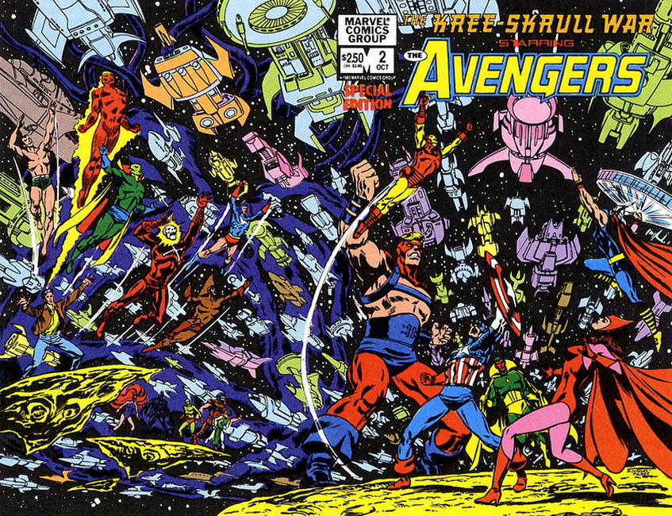

The Kree-Skrull War: Starring the Avengers: Part 1 of 2 - Collects Avengers (1963-1996 1st Series) #93-94. Written by Roy Thomas. Art by Neal Adams and John Buscema. It was the most epic Avengers tale in Marvel History as two great intergalactic empires go to war with planet Earth stuck right in the middle. Can Earth's Mightiest Heroes keep their planet safe when the mighty Kree and sinister Skrulls make war? Includes an original PROLOGUE [which summarizes Avengers (1963-1996 1st Series) #89-92] starring Captain Mar-Vell by Alan Zelenetz and Walt Simonson.

The Kree-Skrull War: Starring the Avengers: Part 2 of 2 - Collects Avengers (1963-1996 1st Series) #95-97. Written by Roy Thomas. Art by Neal Adams and John Buscema. The Avengers blast off into outer space to stop an intergalactic war that has spilled over and threatens to destroy planet Earth. Don't miss the exciting conclusion to the most epic Avengers tale to date!